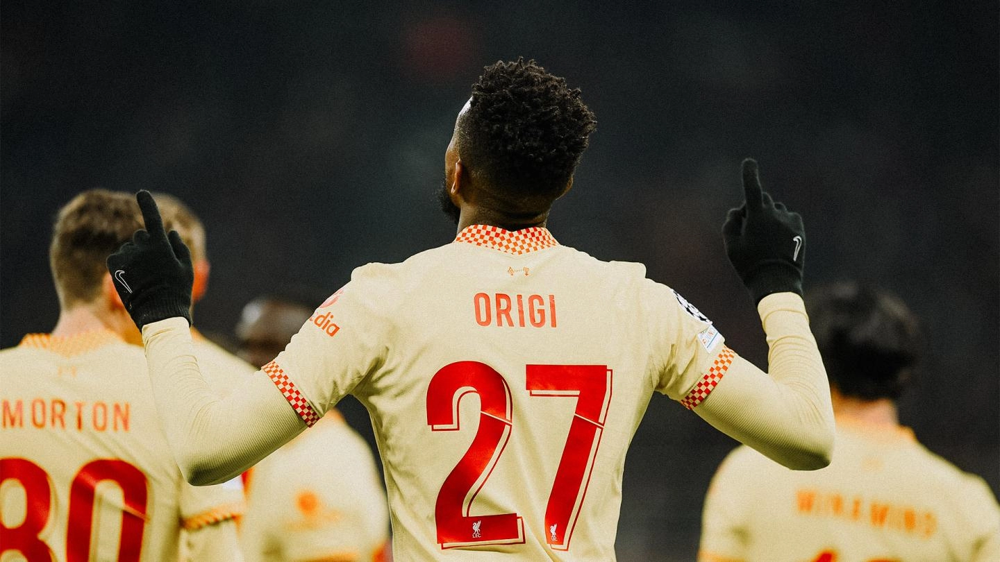

Oxlade-Chamberlain: Milan win shows the team is in a good place
Alex Oxlade-Chamberlain believes Liverpool's level of performance in the victory at AC Milan on Tuesday signals the quality and hunger running deep throughout the squad.
Jürgen Klopp opted to make eight changes for the encounter at San Siro, where his side came from a goal down to win 2-1 thanks to finishes from Mohamed Salah and Divock Origi. That result saw the Reds make history as they became the first English club to win all six of their games in a Champions League group phase.
"I said recently I think the team is in the best shape it's been," Oxlade-Chamberlain told Liverpoolfc.com post-match. "I think we're a better team than we have been at this point in time. "And I think that comes with playing together for years, having moments of success, understanding what we needed to do to get that, the levels we had to set and how relentless we had to be to achieve those things. "I think that just stands us in good stead every game going forward. "Whether it's the Carabao Cup, obviously the FA Cup will be starting soon, the last few Champions League games where we've made changes, maybe in recent seasons gone by when we make so many changes it doesn't always go the way you want it to and the performance drops off. But I think tonight was a really good example. "We can be proud of the fact that the whole squad is important and the whole squad is moving forward and developing together because that is crucial. "We've had moments where we've had a lot of injuries and players need to step up and fill the shoes of some really top players that play a lot of football for this club. "So moments like tonight where the young lads can come in and prove their worth and all of us as a group can continue the high standards and winning games and getting a result, I think that shows the team is in a good place."
In addition to the comeback and feats achieved, Oxlade-Chamberlain found plenty of other positives to draw from Liverpool's display in Italy. Naby Keita and Joe Gomez made returns from injury, while there were assured performances from players of all ages across the pitch. The No.15 continued: "I think you have to keep the standards high to keep up with where the team is trying to move to. "The boys are performing really well. The lads that play regularly, they set the standards high, all of us in training set the standards high. "And if you want to be around this and be a part of this team moving forward and this football club, you've got to have that between your teeth and the desire to work hard, show what you can do, take your chances when they come. "I think tonight was a really good example of that from a lot of players that haven't played maybe as much as they have in other seasons. "Nat came back in tonight for the first time in a while, he was brilliant. I thought Neco was outstanding at right-back. Young Tyler again was really solid, really good. Divock, it's two in two for him now – he has been brilliant. I could go through the whole team. Kostas at left-back was solid. "It was good to see Naby back as well and Joey G – it's important for us moving forward, so it's good for them to get some minutes. "All in all, it was a good night's work for us, for sure." Liverpool had already secured qualification for Monday's last-16 draw on matchday four back in early November. But that made no difference to how the side approached their meeting with Stefano Pioli's Milan in the Group B finale. "There was no point in jumping on a plane for two hours and not trying to win the game of football," Oxlade-Chamberlain stressed. "You see how many fans we had there tonight as well, it was unbelievable and it's not right for us to turn up and not put in the right level of performance. We're here to win. "Of course the manager reminds us quite a lot that as human beings complacency slips in with all of us, but it’s our job to make sure that we don't let that happen or you try to limit the amount that it happens. "So, we knew what we needed to do tonight, we came all this way and we wanted to put in a great performance."
Read the full article on Liverpools official page!